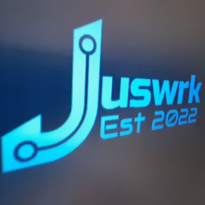

Engineering Portfolio
Career history, project evidence, qualifications and practical site experience.
Open portfolio →
M-Hub A Juswrk projectElectrical · Utilities · Project Delivery · Digital
M-Hub brings together real project experience, technical knowledge, engineering tools and developing automation systems in one place.
About M-Hub
A working record of electrical installation, water and wastewater assets, surveys, controls, project coordination, technical development and practical problem solving.
Featured work
Career history, project evidence, qualifications and practical site experience.
Open portfolio →Flow-capacity, tank-volume and pump-performance tools developed for practical use.
View lab status →Jetson-powered CCTV, alerts, sensors, Alexa integration and intelligent home control.
See the roadmap →Electrical, retail, utilities, controls and infrastructure work supported by photographs.
Request project evidence →Career timeline
Pump optimisation, United Utilities assets, access coordination, surveys, RAMS, site files and refurbishment support.
Framework and site-delivery experience supporting temporary works, electrical activities and project coordination.
A broad practical background covering installation, testing, controls, data, fit-out and operational environments.
Live Lab
Contact
Use M-Hub to review current work, technical development and project evidence.